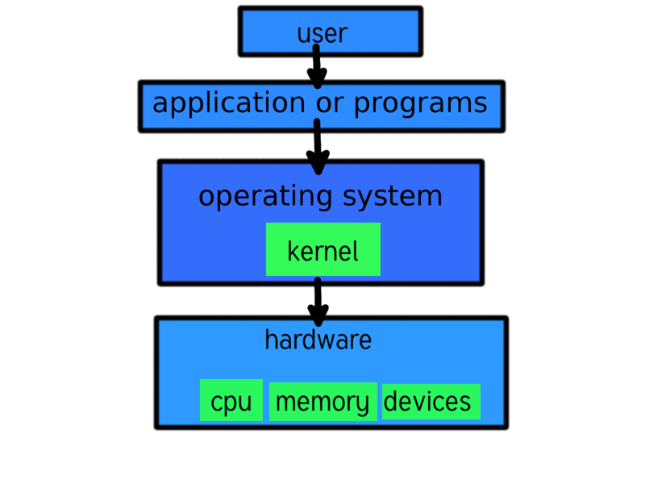

GNU/Linux

copyleft

Copyright
Copyleft and the GNU GPL
- In 1980, the copyright law was extended to computer programs in the United States
Copyleft and the GNU GPL
- The principal goal of GNU is to be free software.
- So we needed to use distribution terms that would prevent GNU software from being turned into proprietary software. The method we use is called “copyleft”.
- Copyleft uses copyright law, but flips it over to serve the opposite of its usual purpose: instead of a means for restricting a program, it becomes a means for keeping the program free.
- The specific implementation of copyleft that we use for most GNU software is the GNU GPL.
General Public License
GNU
* The Linux kernelGNU's not Unix
What is the Free Software Movement?
The free software movement campaigns to win for the users of computing the freedom that comes from free software. Free software puts its users in control of their own computing.
What is Free Software?
- The freedom to run the program as you wish, for any purpose (freedom 0).
- The freedom to study how the program works, and adapt it to your needs (freedom 1). Access to the source code is a precondition for this.
- The freedom to redistribute copies so you can help your neighbor (freedom 2).
- The freedom to improve the program, and release your improvements to the public, so that the whole community benefits (freedom 3). Access to the source code is a precondition for this.
Free license
- To make it free software, you need to release it under a free software license. We normally use the GNU General Public License (GNU GPL),
- Four freedom
- Specific implementation of copyleft
- the source code of the work must be made available under the same license
- gnu normally use the GNU General Public License (GNU GPL)
The Linux kernel is released under the GPLv2


by positioning, rotating and scaling them on an infinite canvas
Embedded system
* raspberry pi

- 1. Telephone decoupling electronics (for ADSL).
- 2. Multicolour LED (displaying network status).
- 3. Single colour LED (displaying USB status).
- 4. Main processor
- 5. JTAG (Joint Test Action Group) test and programming port.
- 6. RAM, a single ESMT M12L64164A 8 MB chip.
- 7. Flash memory, obscured by sticker.
- 8. Power supply regulator.
- 9. Main power supply fuse.
- 10. Power connector.
- 11. Reset button.
- 12. Quartz crystal.
- 13. Ethernet port.
- 14. Ethernet transformer, Delta LF8505.
- 15. KS8721B ethernet PHY transmitter receiver.
- 16. USB port.
- 17. Telephone (RJ11) port.
- 18. Telephone connector fuses.
 ADSL Modem/router
ADSL Modem/router
want to know more?
use the source, Luke!
one more thing...
have you noticed it's in 3D*?
* beat that, prezi ;)